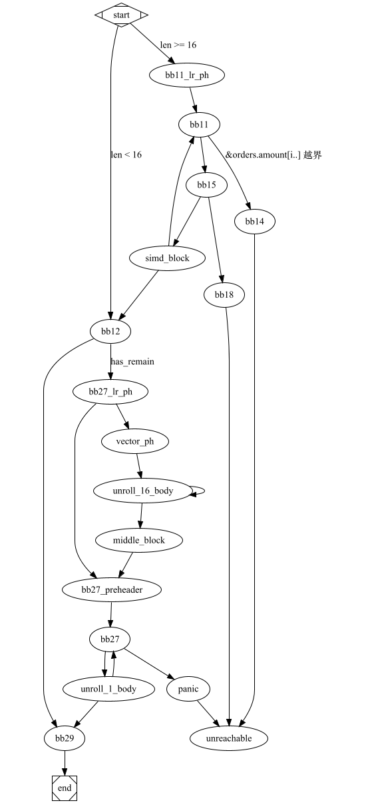
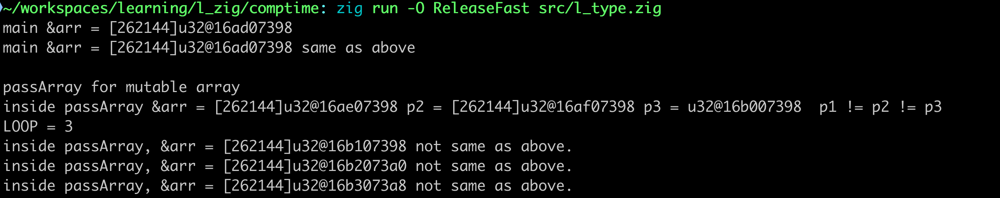

阅读 李成栋-从现代CPU 特性和编译的角度分析C++ 代码优化
-
示例代码：
void compute(int *input, int *output){ if(*input > 10) *output = 1; if(*input > 5) *output *= 2; } # include <stdio.h> int main(int args, char **argv){ int i = 20; int o = 0; for(int j = 0; j < 800000000; j++){ compute(&i, &o); } printf("out = %d\n", o); } -
ASM
compute: mov eax, dword ptr [rdi] cmp eax, 11 jge .LBB0_1 cmp eax, 6 jge .LBB0_3 .LBB0_4: ret .LBB0_1: mov dword ptr [rsi], 1 mov eax, dword ptr [rdi] cmp eax, 6 jl .LBB0_4 .LBB0_3: shl dword ptr [rsi] ret
对比
- 在同一个模块中，直接内连优化。循环被消除掉了，直接产生结果。
- 在不同模块中，除非使用 LTO，否则无法进行内联优化。
对比：
- rust 在 inline 方面更为激进
- rust 在 alias 方面更有利于优化。
- likely 导致分支预测，性能偏差约 25%。
#![feature(core_intrinsics)] #[inline(never)] unsafe fn compute(input: &i32, output: &mut i32) { if std::intrinsics::unlikely(*input > 10) { *output = 1; } if *input > 5 { *output *= 2; } } pub fn main(){ let i = 20i32; let mut o = 0i32; let mut j = 0u32; while j < 1_000_000_000u32 { unsafe { compute(&i, &mut o); } j += 1; } println!("out = {}\n", o); }
- likely(0.76s) 版本相比 unlikely(1.26s) 版本，性能提升约 40%。
最近，阅读了 rust-under-the-hood一书，从生成的汇编代码来理解 Rust 语言，颇有一些收获：
- Rust 语言编译后的汇编代码，在很多方面的优化，是令人惊讶的。例如，对于 vector 的函数式操作，与 for 循环等相比，生成的代码是等效的，这 既享受了语法上的优雅简洁（如Scala），又享受了性能的优势（而这是 scala 等望尘莫及的）
- SIMD 指令集的使用，让应用代码可以更好的利用 CPU 的并行计算能力。
加之，最近在阅读 DuckDB 的源代码，也对向量计算非常的感兴趣，写这个系列，是想进一步的实践、研究 向量相关的编译优化技术，为后续的一些性能 优化工作做些筹备。
- 哪些场景 适合于 compiler vectorization？
- 使用 portable simd 库来编写处理向量的代码？是否会有更好的性能提升？
tips
- 查看 HIR 代码：
cargo rustc --release -- -Zunpretty=hir - 查看 MIR 代码：
cargo rustc --release -- -Zunpretty=mir - 查看 LLVM IR 代码：
cargo rustc --release -- --emit llvm-ir，生成的文件在target/release/deps/目录下。 - 查看 ASM 代码：
cargo rustc --release -- --emit asm -C llvm-args=-x86-asm-syntax=intel，生成 intel 风格的汇编代码 (move dest src) - 编译选项：
-C target-cpu=native，生成针对当前 CPU 的优化代码。 - 编译选项：
-C target-feature=+avx2，生成针对 AVX2 指令集的优化代码。 - 编译选项：
-C target-feature=+avx512f,+popcnt，生成针对 AVX512 + popcnt 指令集的优化代码。 - 交叉编译
--target x86_64-apple-darwin在 M1 下编译生成 x86_64 的代码。 - 对有的 cargo 命令，如 cargo bench，可以使用 RUSTFLAGS 环境变量传递
本篇分析一下 rust 语言的编译期自动向量化的特性。
#![allow(unused)] fn main() { #[inline(never)] pub fn select(v1: &[i32], v2: &[i32], result: &mut [bool]) { assert!(v1.len() == v2.len() && v1.len() == result.len()); for i in 0..v1.len() { if v1[i] > v2[i] { result[i] = true } else { result[i] = false } } } }
- %rdi : %rsi v1.ptr() : v1.len()
- %rdx : %rcx v2.ptr() : v2.len()
- %r8 : %r9 result.ptr() : result.len()
LCPI6_0:
.quad 72340172838076673 -- 0x01010101_01010101 // 8 个 1
.section __TEXT,__text,regular,pure_instructions
.p2align 4, 0x90
__ZN5l_asm5demo16select17h43db37ec056aed21E:
.cfi_startproc
cmp rsi, rcx -- v1.len() == v2.len()
jne LBB6_10
cmp rsi, r9 -- v1.len() == result.len()
jne LBB6_10
test rsi, rsi -- v1.len() == 0
je LBB6_9
cmp rsi, 32 -- v1.len() >= 32
jae LBB6_5
xor eax, eax
jmp LBB6_8 -- 少于32时，直接循环处理
LBB6_5:
mov rax, rsi
and rax, -32 -- rax = rsi & -32
xor ecx, ecx
vpbroadcastq ymm0, qword ptr [rip + LCPI6_0] -- ymm0: 32x8
.p2align 4, 0x90
LBB6_6:
vmovdqu ymm1, ymmword ptr [rdi + 4*rcx] -- ymm1..ymm4 加载 32 个 i32 from v1
vmovdqu ymm2, ymmword ptr [rdi + 4*rcx + 32]
vmovdqu ymm3, ymmword ptr [rdi + 4*rcx + 64]
vmovdqu ymm4, ymmword ptr [rdi + 4*rcx + 96]
vpcmpgtd ymm1, ymm1, ymmword ptr [rdx + 4*rcx]
-- ymm1:8x32 = [ c0, c1, ..., c7 ]
vpcmpgtd ymm2, ymm2, ymmword ptr [rdx + 4*rcx + 32]
-- ymm2:8x32 = [ c8, c9, ..., c15]
vpcmpgtd ymm3, ymm3, ymmword ptr [rdx + 4*rcx + 64]
-- ymm3: 8x32 = [ c16, c17, ..., c23]
vpackssdw ymm1, ymm1, ymm2
-- ymm1: 16x16 = [ c0, c1, ..., c15]
vpcmpgtd ymm2, ymm4, ymmword ptr [rdx + 4*rcx + 96]
vpackssdw ymm2, ymm3, ymm2 -- ym2 = 16..31, 【i16, 16]
-- ymm2: 16x16 = [c16, c17, ..., c31]
vpermq ymm2, ymm2, 216 -- 0b11_01_10_00
-- ymm2: 16x16 = [ c16, c17, c18, c19, c24, c25, c26, c27, c20, c21, c22, c23, c28, c29, c30, c31]
-- vpermq 分析有些问题
vpermq ymm1, ymm1, 216
-- ymm1: 16x16 = [ c0, c1, c2, c3, c8, c9, c10, c11, c4, c5, c6, c7, c12, c13, c14, c15]
vpacksswb ymm1, ymm1, ymm2
-- ymm1: 32x8 = [ c0, c1, c2, c3 , c8, c9, c10, c11, c4, c5, c6, c7, c12, c13, c14, c15,
c16, c17, c18, c19, c24, c25, c26, c27, c20, c21, c22, c23, c28, c29, c30, c31] -- 32x8
vpermq ymm1, ymm1, 216
-- ymm1: 32x8 = [ c0, c1, c2, c3, c8, c9, c10, c11, c16, c17, c18, c19, c24, c25, c26, c27,
.......]
vpand ymm1, ymm1, ymm0
vmovdqu ymmword ptr [r8 + rcx], ymm1
add rcx, 32 -- 一次循环处理完32个整数
cmp rax, rcx
jne LBB6_6
cmp rax, rsi
je LBB6_9
.p2align 4, 0x90
LBB6_8:
mov ecx, dword ptr [rdi + 4*rax]
cmp ecx, dword ptr [rdx + 4*rax]
setg byte ptr [r8 + rax]
lea rcx, [rax + 1]
mov rax, rcx
cmp rsi, rcx
jne LBB6_8
LBB6_9:
vzeroupper
ret
LBB6_10:
push rbp
.cfi_def_cfa_offset 16
.cfi_offset rbp, -16
mov rbp, rsp
.cfi_def_cfa_register rbp
lea rdi, [rip + l___unnamed_3]
lea rdx, [rip + l___unnamed_4]
mov esi, 66
call __ZN4core9panicking5panic17h2a3e12572053020cE
.cfi_endproc
从这段代码来看，在 +avx2 特性下，编译期生成了使用 256 bit 寄存器的代码，一次循环可以处理 32 个 i32 数据。 而如果在 +avx512f 特性下，编译期生成了使用 512bit 的代码， 一次循环可以处理 64 个 i32 数据。 实际性能如何？需要找一台支持 AVX512 指令集的机器来做一下测试。
调整
- 修改为 i32 与 i16 的比较:
在 +avx2 特性下，可以使用 vpmovsxwd 指令在读取 v2 的数据时，一次将 8 个 i16 读取并转换为 8 个 i32，然后再进行比较。#![allow(unused)] fn main() { use std::simd::i8x1; #[inline(never)] pub fn select(v1: &[i32], v2: &[i16], result: &mut [bool]) { assert!(v1.len() == v2.len() && v1.len() == result.len()); for i in 0..v1.len() { if v1[i] > (v2[i] as i32) { result[i] = true } else { result[i] = false } } } } - 修改
v1[i]为一个v1.get(i)时，生成代码？
此时，load 数据这一块可能会无法使用 SIMD 指令集，可能需要多次获取数据后，再拼装为一个 SIMD 寄存器。 - 在 OLAP 向量计算中，如果采用代码生成的方式，相比解释表达式，并分派给多个模版方法，肯定会有性能上的提升：
- 多个运算间，可以复用寄存器
- 是否可以采用 LLVM 来做这个的代码生成？
- 尝试阅读 LLVM IR 代码，评估后续通过生成 LLVM IR 的方式来执行的可能行。
LLVM-IR 阅读
; l_asm::demo1::select
; Function Attrs: noinline uwtable
define internal fastcc void @_ZN5l_asm5demo16select17h43db37ec056aed21E(
ptr noalias nocapture noundef nonnull readonly align 4 %v1.0, i64 noundef %v1.1,
ptr noalias nocapture noundef nonnull readonly align 4 %v2.0, i64 noundef %v2.1,
ptr noalias nocapture noundef nonnull writeonly align 1 %result.0, i64 noundef %result.1) unnamed_addr #0 {
start:
%_4 = icmp eq i64 %v1.1, %v2.1
%_7 = icmp eq i64 %v1.1, %result.1
%or.cond = and i1 %_4, %_7 -- i1: bit
br i1 %or.cond, label %bb5.preheader.split, label %bb4 -- br type iftrue ifalse
bb5.preheader.split: ; preds = %start
%_218.not = icmp eq i64 %v1.1, 0
br i1 %_218.not, label %bb15, label %bb13.preheader
bb13.preheader: ; preds = %bb5.preheader.split
%min.iters.check = icmp ult i64 %v1.1, 32 -- unsigned less than
br i1 %min.iters.check, label %bb13.preheader17, label %vector.ph
vector.ph: ; preds = %bb13.preheader
%n.vec = and i64 %v1.1, -32
br label %vector.body
vector.body: ; preds = %vector.body, %vector.ph
%index = phi i64 [ 0, %vector.ph ], [ %index.next, %vector.body ] -- TODO? what is phi
%0 = getelementptr inbounds [0 x i32], ptr %v1.0, i64 0, i64 %index -- %0 = %v1.0
%1 = getelementptr inbounds i32, ptr %0, i64 8 -- %1 = %0 + 32byte
%2 = getelementptr inbounds i32, ptr %0, i64 16
%3 = getelementptr inbounds i32, ptr %0, i64 24
%wide.load = load <8 x i32>, ptr %0, align 4 -- 8x32 from v1
%wide.load10 = load <8 x i32>, ptr %1, align 4
%wide.load11 = load <8 x i32>, ptr %2, align 4
%wide.load12 = load <8 x i32>, ptr %3, align 4
%4 = getelementptr inbounds [0 x i32], ptr %v2.0, i64 0, i64 %index
%5 = getelementptr inbounds i32, ptr %4, i64 8
%6 = getelementptr inbounds i32, ptr %4, i64 16
%7 = getelementptr inbounds i32, ptr %4, i64 24
%wide.load13 = load <8 x i32>, ptr %4, align 4 -- 8x32 from v1
%wide.load14 = load <8 x i32>, ptr %5, align 4
%wide.load15 = load <8 x i32>, ptr %6, align 4
%wide.load16 = load <8 x i32>, ptr %7, align 4
%8 = icmp sgt <8 x i32> %wide.load, %wide.load13 -- signed greater than
%9 = icmp sgt <8 x i32> %wide.load10, %wide.load14
%10 = icmp sgt <8 x i32> %wide.load11, %wide.load15
%11 = icmp sgt <8 x i32> %wide.load12, %wide.load16
%12 = zext <8 x i1> %8 to <8 x i8> -- zero extend 8x1 to 8x8
%13 = zext <8 x i1> %9 to <8 x i8>
%14 = zext <8 x i1> %10 to <8 x i8>
%15 = zext <8 x i1> %11 to <8 x i8>
%16 = getelementptr inbounds [0 x i8], ptr %result.0, i64 0, i64 %index
%17 = getelementptr inbounds i8, ptr %16, i64 8
%18 = getelementptr inbounds i8, ptr %16, i64 16
%19 = getelementptr inbounds i8, ptr %16, i64 24
store <8 x i8> %12, ptr %16, align 1 -- store 8x8 to result
store <8 x i8> %13, ptr %17, align 1
store <8 x i8> %14, ptr %18, align 1
store <8 x i8> %15, ptr %19, align 1
%index.next = add nuw i64 %index, 32
%20 = icmp eq i64 %index.next, %n.vec
br i1 %20, label %middle.block, label %vector.body, !llvm.loop !17 -- TODO what's !llvm.loop !17
middle.block: ; preds = %vector.body
%cmp.n = icmp eq i64 %n.vec, %v1.1
br i1 %cmp.n, label %bb15, label %bb13.preheader17
bb13.preheader17: ; preds = %bb13.preheader, %middle.block
%iter.sroa.0.09.ph = phi i64 [ 0, %bb13.preheader ], [ %n.vec, %middle.block ]
br label %bb13
bb4: ; preds = %start
; call core::panicking::panic
tail call void @_ZN4core9panicking5panic17h2a3e12572053020cE(ptr noalias noundef nonnull readonly align 1 @alloc_882a6b32f40210455571ae125dfbea95, i64 noundef 66, ptr noalias noundef nonnull readonly align 8 dereferenceable(24) @alloc_649ca88820fbe63b563e38f24e967ee7) #12
unreachable
bb15: ; preds = %bb13, %middle.block, %bb5.preheader.split
ret void
bb13: ; preds = %bb13.preheader17, %bb13
%iter.sroa.0.09 = phi i64 [ %_0.i, %bb13 ], [ %iter.sroa.0.09.ph, %bb13.preheader17 ]
%_0.i = add nuw i64 %iter.sroa.0.09, 1
%21 = getelementptr inbounds [0 x i32], ptr %v1.0, i64 0, i64 %iter.sroa.0.09
%_13 = load i32, ptr %21, align 4, !noundef !4
%22 = getelementptr inbounds [0 x i32], ptr %v2.0, i64 0, i64 %iter.sroa.0.09
%_15 = load i32, ptr %22, align 4, !noundef !4
%_12 = icmp sgt i32 %_13, %_15
%spec.select = zext i1 %_12 to i8
%23 = getelementptr inbounds [0 x i8], ptr %result.0, i64 0, i64 %iter.sroa.0.09
store i8 %spec.select, ptr %23, align 1
%exitcond.not = icmp eq i64 %_0.i, %v1.1
br i1 %exitcond.not, label %bb15, label %bb13, !llvm.loop !20
}
对照 LLVM-IR 文档， 还是比较好理解的， 相比 x86 汇编，LLVM-IR 在 SIMD 上的可读性显然要高太多。如果理解了 LLVM-IR，并掌握了生成 LLVM-IR 后再通过 LLVM 生成机器码，然后再通过 JIT 的方式执行，那么，在 OLAP 中未尝 不是一种更好的替代模版特化的方式。
- 对于较为复杂的表达式，例如 a > b && c + d > e, 特化的方式，基本上每个运算符都是一次函数调用，这里是4次调用，且每次函数调用涉及到类型组合， 需要特化的函数版本会非常的多。
- 使用 LLVM-IR，这个表达式可以直接优化为 1个函数调用，然后通过 LLVM 优化器，生成最优的机器码。内部可能会减少不必要的 Load/Store 过程，减少 中间向量的生成和内存占用。
JIT 参考资料：
Rust Sugars
语法糖具有两面性：
- Pros: 语法糖可以让代码更加简洁，更加易读，更加易写。
- Cons: 语法糖会隐藏实现细节，而如果你并没有理解这些细节，那么可能会导致一些问题：即错误的使用，或者衍生的其他问题。
在这一点上，与抽象具有一定的相似性。
本文收集 Rust 语言的一些语法糖，以帮助加深对其的理解。
for 循环与 IntoIterator
#![allow(unused)] fn main() { for i in 0..10 { println!("{}", i); } ; 上面的代码等效于下面的代码 let iter = (0..10).into_iter(); while let Some(i) = iter.next() { println!("{}", i); } }
这里以 collection: Vec<T> 为例
-
for elem in collection这里的 elem 类型为collection.into_iter().Item, T。- collection 的所有权已经转移给了
into_iter。 - 遍历过程中，elem 的 所有权又从 iterator 转移给了 elem。
- 可以使用
for mut elem in collection来修饰 elem，这样 elem 就是可变的。
- collection 的所有权已经转移给了
-
for elem in &collection这里的 elem 类型为(&collection).iter().Item, 即 &T#![allow(unused)] fn main() { impl<'a, T, A: Allocator> IntoIterator for &'a Vec<T, A> { type Item = &'a T; type IntoIter = slice::Iter<'a, T>; fn into_iter(self) -> Self::IntoIter { self.iter() } } }- collection 的所有权没有转移
- iter 过程返回的也是引用，所以 elem 的所有权也没有转移。
-
for elem in &mut collection这里 elem 类型为(&mut collection).iter_mut().Item, 即 &mut T,#![allow(unused)] fn main() { impl<'a, T, A: Allocator> IntoIterator for &'a mut Vec<T, A> { type Item = &'a mut T; type IntoIter = slice::IterMut<'a, T>; fn into_iter(self) -> Self::IntoIter { self.iter_mut() } } }- collection 的所有权没有转移
- iter_mut 过程返回的是 &mut T 对于所有实现 IntoIterator 的类型 X，都需要参考上述的方式，来分别处理 X, &X, &mut X 的情况。或者根据实现情况，来选择支持其中某一种方式。
pattern matching
- literal
- range: 0..10, 0..=10, 'a'..='z', 0..
_- variable: x, mut x
- ref variable: ref x, ref mut x
- enum: Some(x), None, Ok(x), Err(x)
- tuple: (x, y), (x, y, z)
- array:
[x, y, z] - slice:
[x,y],[x, _, z],[x, ..., z],[] - struct:
Point { x, y },Point { x: 0, y: 0 } - 引用：
&x,&(k,v)
match 可能引起所有权的转移：
#![allow(unused)] fn main() { struct Point { x: i32, y: i32, } impl Drop for Point { fn drop(&mut self) { println!("Dropping Point({}, {})", self.x, self.y); } } fn demo(guard: i32){ let p = Point{x:10, y:20}; { // block1 match p { v if v.x == guard => {} // p will moved to v ref v => {} // p will not moved } } println!("ok"); } }
- demo(10) 会打印：
Dropping Point(10, 20) ; // p moved to v, and v will be dropped after block1 ok - demo(100) 会打印：
ok Dropping Point(10, 20) // p will not moved, and will be dropped after demo
这里就涉及到条件转移，涉及到条件转移时，离开 block 时，都不能再使用 p，因为 p 的所有权可能已经转移了。
#![allow(unused)] fn main() { &point match { Point{x, y} => {} // x: &i32, y: &i32 Point{x: ref x1, y: ref y1} => {} // x1: &i32, y1: &i32 &Point{x, y} => {} // x: i32, y: i32 & 用于从 &struct 中复制数据 // Point { x: &x1 , y: y1 } => { } // 编译错误 // &p2 => {} // cannot move out of a shared reference } &mut point match { Point{x, y} => {} // x: &mut i32, y: &mut i32 Point{x: ref x1, y: ref y1} => {} // x1: &i32, y1: &i32 Point{x: ref mut x1, y: ref mut y1 } => { } // x1: &mut i32, y1: &mut i32 &mut Point {x, y } => { } // x: i32, y: i32 } }
Rust 的 pattern match 与 scala 的并不完全相同，scala中，是 unapply 的语法糖，但 rust 显然要复杂很多，都是内置在编译器中。
simd-1
这个例子摘自实验项目
#![allow(unused)] fn main() { #[inline(never)] fn aggregate_data(orders: &Orders) -> (f64, u32) { let mut total_amount = 0.0; let mut count = 0; for i in 0..orders.order_id.len() { total_amount += orders.amount[i]; count += 1; } (total_amount, count) } // 1G 数据，耗时 260ms #[inline(never)] fn aggregate_data_simd(orders: &Orders) -> (f64, u32) { let mut total_amount = 0.0; let mut count = 0; let length = orders.order_id.len() & (!0x0F); // 16 is better than 32, same as 8 for i in (0..length).step_by(16) { let amount= f64x16::from_slice(&orders.amount[i..]); let zero = f64x16::splat(0.0); total_amount += amount.reduce_sum(); // x86 上 reduce_sum 不支持向量化，还是多次累加 count += amount.simd_ne(zero).to_bitmask().count_ones(); // x86 有 popcnt 指令 } for i in length..orders.order_id.len() { total_amount += orders.amount[i]; count += 1; } (total_amount, count) } #[inline(never)] fn aggregate_data_simd2(orders: &Orders) -> (f64, u32) { let mut total_amount = 0.0; let mut count = 0; let length = orders.order_id.len() & (!0x0F); // 16 is better than 32, same as 8 let mut aggr1 = f64x16::splat(0.0); // let mut aggr2 = f64x16::splat(0.0); let zero = f64x16::splat(0.0); for i in (0..length).step_by(16) { let amount1= f64x16::from_slice(&orders.amount[i..]); // let amount2= f64x16::from_slice(&orders.amount[i+16 ..]); aggr1 = aggr1 + amount1; // aggr2 = aggr2 + amount2; count += amount1.simd_ne(zero).to_bitmask().count_ones(); // x86 有 popcnt 指令 // count += amount2.simd_ne(zero).to_bitmask().count_ones(); // x86 有 popcnt 指令 } total_amount = aggr1.reduce_sum() ; for i in length..orders.order_id.len() { total_amount += orders.amount[i]; count += 1; } (total_amount, count) } }
分别运行 1B(10亿) 的数据，耗时如下：
- aggregate_data 947ms （0.9ns/iter)
- aggregate_data_simd 260ms
- aggregate_data_simd2 160ms
x86_64 查看生成的汇编代码：
- aggregate_data 进行了循环展开，一次循环处理了 4个 f64 数据，但没有使用 SIMD 指令。
LBB24_10: vmovsd xmm2, qword ptr [rdx + 8*rsi] vmovsd xmm3, qword ptr [rdx + 8*rsi + 8] vaddsd xmm0, xmm0, xmm2 // xmm0 += amount[i] vcmpneqsd k0, xmm1, xmm2 kmovw edi, k0 add edi, eax // edi = count + (amount[i] != 0) vaddsd xmm0, xmm0, xmm3 // xmm0 += amount[i+1] vcmpneqsd k0, xmm1, xmm3 kmovw eax, k0 vmovsd xmm2, qword ptr [rdx + 8*rsi + 16] vaddsd xmm0, xmm0, xmm2 // xmm0 += amount[i+2] vcmpneqsd k0, xmm1, xmm2 kmovw r9d, k0 // add r9d, eax // r9d = (amount[i+1] != 0) + (amount[i+2] != 0) add r9d, edi // r9d = count + (amount[i] != 0) + (amount[i+1] != 0) + (amount[i+2] != 0) vmovsd xmm2, qword ptr [rdx + 8*rsi + 24] add rsi, 4 vaddsd xmm0, xmm0, xmm2 // xmm0 += amount[i+3] vcmpneqsd k0, xmm1, xmm2 kmovw eax, k0 add eax, r9d // count += (amount[i+3] != 0) cmp r8, rsi jne LBB24_10- 进行了循环展开，一次循环处理了 4个 f64 数据
- 没有使用 SIMD 指令
- 上述指令具有一定的并行性。IPC > 1
- aggregate_data_simd 显示在一次循环中处理 16个 f64 数据
开启 avx512f 指令集，以及 popcnt 特性，生成的代码如下：
LBB25_8: cmp rcx, rsi ja LBB25_12 cmp r10, 15 jbe LBB25_13 dec r8 vaddsd xmm3, xmm1, qword ptr [r9 + 8*rcx] vaddsd xmm3, xmm3, qword ptr [r9 + 8*rcx + 8] vaddsd xmm3, xmm3, qword ptr [r9 + 8*rcx + 16] vaddsd xmm3, xmm3, qword ptr [r9 + 8*rcx + 24] vaddsd xmm3, xmm3, qword ptr [r9 + 8*rcx + 32] vaddsd xmm3, xmm3, qword ptr [r9 + 8*rcx + 40] vaddsd xmm3, xmm3, qword ptr [r9 + 8*rcx + 48] vaddsd xmm3, xmm3, qword ptr [r9 + 8*rcx + 56] vaddsd xmm3, xmm3, qword ptr [r9 + 8*rcx + 64] vaddsd xmm3, xmm3, qword ptr [r9 + 8*rcx + 72] vaddsd xmm3, xmm3, qword ptr [r9 + 8*rcx + 80] vaddsd xmm3, xmm3, qword ptr [r9 + 8*rcx + 88] vaddsd xmm3, xmm3, qword ptr [r9 + 8*rcx + 96] vaddsd xmm3, xmm3, qword ptr [r9 + 8*rcx + 104] vaddsd xmm3, xmm3, qword ptr [r9 + 8*rcx + 112] vaddsd xmm3, xmm3, qword ptr [r9 + 8*rcx + 120] ; xmm3 = amount[i] + amount[i+1] + ... + amount[i+15] vcmpneqpd k0, zmm2, zmmword ptr [r9 + 8*rcx] vcmpneqpd k1, zmm2, zmmword ptr [r9 + 8*rcx + 64] vaddsd xmm0, xmm0, xmm3 kunpckbw k0, k1, k0 kmovw r11d, k0 popcnt r11d, r11d ; r11d = popcnt(k0) add eax, r11d add r10, -16 add rcx, 16 test r8, r8 jne LBB25_8- f64 加法没有利用到 SIMD 指令
- count 计算使用到 zmm 寄存器进行 SIMD 比较。
- 使用了 popcnt 指令来计算 count
- aggregate_data_simd2
LBB26_8: cmp rcx, rsi ja LBB26_12 cmp r10, 15 jbe LBB26_13 dec r8 vmovupd zmm3, zmmword ptr [r9 + 8*rcx] vmovupd zmm4, zmmword ptr [r9 + 8*rcx + 64] vaddpd zmm0, zmm0, zmm4 vaddpd zmm1, zmm1, zmm3 vcmpneqpd k0, zmm3, zmm2 vcmpneqpd k1, zmm4, zmm2 kunpckbw k0, k1, k0 kmovw r11d, k0 popcnt r11d, r11d add eax, r11d add r10, -16 add rcx, 16 test r8, r8 jne LBB26_8- 加法充分使用到 SIMD 指令
- count 充分利用 popcnt 指令
ARM64 查看生成的汇编代码：
-
aggregate_data
-
aggregate_data_simd
-
aggregate_data_simd2
; x11: &orders.amount[i..] ; x8: i ; x12: orders.order_id.len() - i ; x9: 循环次数 ; aggr1: f64x16 = v18, v23, v22, v20, v21, v19, v17, v0 ; count_aggr: i64x16 = v3, v4, v2, v1, v6, v5, v16, v7 LBB26_3: cmp x8, x1 b.hi LBB26_14 cmp x12, #15 b.ls LBB26_15 ldp q25, q24, [x11, #64] ; q24, q25, q26, q27, q28, q29, q30, q31: amount1: f64x16 ldp q27, q26, [x11, #32] ldp q28, q29, [x11] fadd.2d v23, v23, v29 ; v23, v18, v22, v20, v21, v19, v17, v0 aggr1: f64x16 fadd.2d v18, v18, v28 fadd.2d v22, v22, v27 fadd.2d v20, v20, v26 fadd.2d v21, v21, v25 fadd.2d v19, v19, v24 ldp q31, q30, [x11, #96] ; 这条指令是否可以提前，以便更好的利用流水线？ fadd.2d v17, v17, v31 fadd.2d v0, v0, v30 fcmeq.2d v30, v30, #0.0 mvn.16b v30, v30。 ； v30, v31, v24, v25, v28, v29, v27, v26: amount1.simd_ne(zero) fcmeq.2d v31, v31, #0.0 mvn.16b v31, v31 fcmeq.2d v24, v24, #0.0 mvn.16b v24, v24 fcmeq.2d v25, v25, #0.0 mvn.16b v25, v25 fcmeq.2d v28, v28, #0.0 mvn.16b v28, v28 fcmeq.2d v29, v29, #0.0 mvn.16b v29, v29 fcmeq.2d v27, v27, #0.0 mvn.16b v27, v27 fcmeq.2d v26, v26, #0.0 mvn.16b v26, v26 sub.2d v3, v3, v26 ; v3, v4, v2, v1, v6, v5, v16, v7: count_aggr += amount1.simd_ne(zero) sub.2d v4, v4, v27 sub.2d v2, v2, v29 sub.2d v1, v1, v28 sub.2d v6, v6, v25 sub.2d v5, v5, v24 add x11, x11, #128 ; x11: &orders.amount, x12 sub x12, x12, #16 sub.2d v16, v16, v31 add x8, x8, #16 ; x8, x9 sub.2d v7, v7, v30 sub x9, x9, #1 cbnz x9, LBB26_3对应的 LLVM-IR 代码如下：
; vector_example1::aggregate_data_simd2 ; Function Attrs: noinline uwtable define internal fastcc { double, i32 } @_ZN15vector_example120aggregate_data_simd217hf7a44556b264af6cE(ptr noalias nocapture noundef readonly align 8 dereferenceable(72) %orders) unnamed_addr #2 personality ptr @rust_eh_personality { start: %_73 = alloca [48 x i8], align 8 %0 = getelementptr inbounds i8, ptr %orders, i64 16 ; &orders.order_id.len %order_id_len = load i64, ptr %0, align 8, !noundef !3 ; orders.order_id.len %length16 = and i64 %order_id_len, -16 ; %length16 = orders.order_id.len & !0x0F %_57.not34 = icmp ult i64 %order_id_len, 16 ; orders.order_id.len < 16 br i1 %_57.not34, label %bb12, label %bb11.lr.ph bb11.lr.ph: ; preds = %start %d.i.i23 = lshr i64 %order_id_len, 4 %1 = getelementptr inbounds i8, ptr %orders, i64 64 ; &orders.total_amount.len %total_amount_len = load i64, ptr %1, align 8, !noundef !3 %2 = getelementptr inbounds i8, ptr %orders, i64 56 ; &order.total_amount.ptr %total_amount_ptr = load ptr, ptr %2, align 8, !nonnull !3 br label %bb11 bb12: ; preds = %simd_block, %start ; orders.order_id.len < 16 %count_aggr.sroa.0.0.lcssa = phi <16 x i64> [ zeroinitializer, %start ], [ %50, %simd_block ] %aggr1.sroa.0.0.lcssa = phi <16 x double> [ zeroinitializer, %start ], [ %47, %simd_block ] %3 = tail call double @llvm.vector.reduce.fadd.v16f64(double 0.000000e+00, <16 x double> %aggr1.sroa.0.0.lcssa) ; total_amount %4 = tail call i64 @llvm.vector.reduce.add.v16i64(<16 x i64> %count_aggr.sroa.0.0.lcssa) %5 = trunc i64 %4 to i32 ; count %_9640.not = icmp eq i64 %length16, %order_id_len br i1 %_9640.not, label %bb29, label %bb27.lr.ph bb27.lr.ph: ; preds = %bb12 ; remaining > 0 %6 = getelementptr inbounds i8, ptr %orders, i64 64 %_100 = load i64, ptr %6, align 8, !noundef !3 %7 = getelementptr inbounds i8, ptr %orders, i64 56 %_102 = load ptr, ptr %7, align 8, !nonnull !3 %8 = or disjoint i64 %length16, 1 %umax = tail call i64 @llvm.umax.i64(i64 %order_id_len, i64 %8) %9 = xor i64 %length16, -1 %10 = add i64 %umax, %9 %11 = tail call i64 @llvm.usub.sat.i64(i64 %_100, i64 %length16) %umin = tail call i64 @llvm.umin.i64(i64 %10, i64 %11) %12 = add i64 %umin, 1 %min.iters.check = icmp ult i64 %12, 17 br i1 %min.iters.check, label %bb27.preheader, label %vector.ph bb27.preheader: ; preds = %middle.block, %bb27.lr.ph %total_amount.sroa.0.043.ph = phi double [ %3, %bb27.lr.ph ], [ %35, %middle.block ] %count.sroa.0.042.ph = phi i32 [ %5, %bb27.lr.ph ], [ %37, %middle.block ] %iter.sroa.0.041.ph = phi i64 [ %length16, %bb27.lr.ph ], [ %ind.end, %middle.block ] br label %bb27 vector.ph: ; preds = %bb27.lr.ph %n.mod.vf = and i64 %12, 15 %13 = icmp eq i64 %n.mod.vf, 0 %14 = select i1 %13, i64 16, i64 %n.mod.vf %n.vec = sub i64 %12, %14 %ind.end = add i64 %length16, %n.vec %15 = insertelement <4 x i32> <i32 poison, i32 0, i32 0, i32 0>, i32 %5, i64 0 br label %unroll_16_body unroll_16_body: ; preds = %unroll_16_body, %vector.ph %index = phi i64 [ 0, %vector.ph ], [ %index.next, %unroll_16_body ] %vec.phi = phi double [ %3, %vector.ph ], [ %35, %unroll_16_body ] %vec.phi62 = phi <4 x i32> [ %15, %vector.ph ], [ %28, %unroll_16_body ] %vec.phi63 = phi <4 x i32> [ zeroinitializer, %vector.ph ], [ %29, %unroll_16_body ] %vec.phi64 = phi <4 x i32> [ zeroinitializer, %vector.ph ], [ %30, %unroll_16_body ] %vec.phi65 = phi <4 x i32> [ zeroinitializer, %vector.ph ], [ %31, %unroll_16_body ] %offset.idx = add i64 %length16, %index %16 = getelementptr inbounds [0 x double], ptr %_102, i64 0, i64 %offset.idx %17 = getelementptr inbounds i8, ptr %16, i64 32 %18 = getelementptr inbounds i8, ptr %16, i64 64 %19 = getelementptr inbounds i8, ptr %16, i64 96 %wide.load = load <4 x double>, ptr %16, align 8 %wide.load66 = load <4 x double>, ptr %17, align 8 %wide.load67 = load <4 x double>, ptr %18, align 8 %wide.load68 = load <4 x double>, ptr %19, align 8 %20 = fcmp une <4 x double> %wide.load, zeroinitializer %21 = fcmp une <4 x double> %wide.load66, zeroinitializer %22 = fcmp une <4 x double> %wide.load67, zeroinitializer %23 = fcmp une <4 x double> %wide.load68, zeroinitializer %24 = zext <4 x i1> %20 to <4 x i32> %25 = zext <4 x i1> %21 to <4 x i32> %26 = zext <4 x i1> %22 to <4 x i32> %27 = zext <4 x i1> %23 to <4 x i32> %28 = add <4 x i32> %vec.phi62, %24 %29 = add <4 x i32> %vec.phi63, %25 %30 = add <4 x i32> %vec.phi64, %26 %31 = add <4 x i32> %vec.phi65, %27 %32 = tail call double @llvm.vector.reduce.fadd.v4f64(double %vec.phi, <4 x double> %wide.load) %33 = tail call double @llvm.vector.reduce.fadd.v4f64(double %32, <4 x double> %wide.load66) %34 = tail call double @llvm.vector.reduce.fadd.v4f64(double %33, <4 x double> %wide.load67) %35 = tail call double @llvm.vector.reduce.fadd.v4f64(double %34, <4 x double> %wide.load68) %index.next = add nuw i64 %index, 16 %36 = icmp eq i64 %index.next, %n.vec br i1 %36, label %middle.block, label %unroll_16_body, !llvm.loop !824 middle.block: ; preds = %unroll_16_body %bin.rdx = add <4 x i32> %29, %28 %bin.rdx69 = add <4 x i32> %30, %bin.rdx %bin.rdx70 = add <4 x i32> %31, %bin.rdx69 %37 = tail call i32 @llvm.vector.reduce.add.v4i32(<4 x i32> %bin.rdx70) br label %bb27.preheader bb11: ; preds = %bb11.lr.ph, %simd_block %aggr1.sroa.0.038 = phi <16 x double> [ zeroinitializer, %bb11.lr.ph ], [ %47, %simd_block ] %count_aggr.sroa.0.037 = phi <16 x i64> [ zeroinitializer, %bb11.lr.ph ], [ %50, %simd_block ] %iter2.sroa.0.036 = phi i64 [ %d.i.i23, %bb11.lr.ph ], [ %38, %simd_block ] %iter1.sroa.0.035 = phi i64 [ 0, %bb11.lr.ph ], [ %_59, %simd_block ] %_59 = add nuw i64 %iter1.sroa.0.035, 16 %38 = add nsw i64 %iter2.sroa.0.036, -1 %_66 = icmp ugt i64 %iter1.sroa.0.035, %total_amount_len br i1 %_66, label %bb14, label %bb15, !prof !45 bb29: ; preds = %unroll_1_body, %bb12 %count.sroa.0.0.lcssa = phi i32 [ %5, %bb12 ], [ %count.sroa.0.1, %unroll_1_body ] %total_amount.sroa.0.0.lcssa = phi double [ %3, %bb12 ], [ %41, %unroll_1_body ] %39 = insertvalue { double, i32 } poison, double %total_amount.sroa.0.0.lcssa, 0 %40 = insertvalue { double, i32 } %39, i32 %count.sroa.0.0.lcssa, 1 ret { double, i32 } %40 bb27: ; preds = %bb27.preheader, %unroll_1_body %total_amount.sroa.0.043 = phi double [ %41, %unroll_1_body ], [ %total_amount.sroa.0.043.ph, %bb27.preheader ] %count.sroa.0.042 = phi i32 [ %count.sroa.0.1, %unroll_1_body ], [ %count.sroa.0.042.ph, %bb27.preheader ] %iter.sroa.0.041 = phi i64 [ %_0.i, %unroll_1_body ], [ %iter.sroa.0.041.ph, %bb27.preheader ] %_105 = icmp ult i64 %iter.sroa.0.041, %_100 br i1 %_105, label %unroll_1_body, label %panic unroll_1_body: ; preds = %bb27 %_0.i = add nuw i64 %iter.sroa.0.041, 1 %_28 = getelementptr inbounds [0 x double], ptr %_102, i64 0, i64 %iter.sroa.0.041 %_27 = load double, ptr %_28, align 8, !noundef !3 %41 = fadd double %total_amount.sroa.0.043, %_27 %_29 = fcmp une double %_27, 0.000000e+00 %42 = zext i1 %_29 to i32 %count.sroa.0.1 = add i32 %count.sroa.0.042, %42 %_96 = icmp ult i64 %_0.i, %order_id_len br i1 %_96, label %bb27, label %bb29, !llvm.loop !825 panic: ; preds = %bb27 ; call core::panicking::panic_bounds_check tail call void @_ZN4core9panicking18panic_bounds_check17h4e300ecacdcb485dE(i64 noundef %iter.sroa.0.041, i64 noundef %_100, ptr noalias noundef nonnull readonly align 8 dereferenceable(24) @alloc_1d64afd2f4d6487c2fc52f49f157fb70) #25 unreachable bb15: ; preds = %bb11 %_68 = sub nuw i64 %total_amount_len, %iter1.sroa.0.035 %_71 = icmp ugt i64 %_68, 15 br i1 %_71, label %simd_block, label %bb18, !prof !162 bb14: ; preds = %bb11 ; call core::slice::index::slice_start_index_len_fail tail call void @_ZN4core5slice5index26slice_start_index_len_fail17hc58130d6bde59316E(i64 noundef %iter1.sroa.0.035, i64 noundef %total_amount_len, ptr noalias noundef nonnull readonly align 8 dereferenceable(24) @alloc_a51f3018634c16dde71b5ca2d7634a49) #25 unreachable bb18: ; preds = %bb15 call void @llvm.lifetime.start.p0(i64 48, ptr nonnull %_73) store ptr @alloc_9050ad19dc66bd48e533c9ef9ae2a705, ptr %_73, align 8 %43 = getelementptr inbounds i8, ptr %_73, i64 8 store i64 1, ptr %43, align 8 %44 = getelementptr inbounds i8, ptr %_73, i64 32 store ptr null, ptr %44, align 8 %45 = getelementptr inbounds i8, ptr %_73, i64 16 store ptr inttoptr (i64 8 to ptr), ptr %45, align 8 %46 = getelementptr inbounds i8, ptr %_73, i64 24 store i64 0, ptr %46, align 8 ; call core::panicking::panic_fmt call void @_ZN4core9panicking9panic_fmt17hf449f69c28a45a63E(ptr noalias nocapture noundef nonnull readonly align 8 dereferenceable(48) %_73, ptr noalias noundef nonnull readonly align 8 dereferenceable(24) @alloc_aff0730a47fd28b03378033af17e580b) #25 unreachable simd_block: ; preds = %bb15 %_69 = getelementptr inbounds double, ptr %total_amount_ptr, i64 %iter1.sroa.0.035 %_77.sroa.0.0.copyload = load <16 x double>, ptr %_69, align 8 %47 = fadd <16 x double> %aggr1.sroa.0.038, %_77.sroa.0.0.copyload %48 = fcmp une <16 x double> %_77.sroa.0.0.copyload, zeroinitializer %49 = zext <16 x i1> %48 to <16 x i64> %50 = add <16 x i64> %count_aggr.sroa.0.037, %49 %_57.not = icmp eq i64 %38, 0 br i1 %_57.not, label %bb12, label %bb11 }对应的 CFG 如下：
%% flowchart TD start[MStart] -->|len < 16| bb12 start -->|len >= 16| bb11_lr_ph bb11_lr_ph --> bb11 bb12 --> bb29 bb12 -->|has_remain| bb27_lr_ph bb27_lr_ph --> bb27_preheader bb27_lr_ph --> vector_ph vector_ph --> unroll_16_body bb27_preheader --> bb27 unroll_16_body --> middle_block middle_block --> bb27_preheader unroll_16_body --> unroll_16_body bb11 -->|&orders.amount i.. 越界| bb14 bb11 --> bb15 bb29 --> END[End] bb27 --> unroll_1_body bb27 --> panic --> unreachable[Unreachable] unroll_1_body --> bb27 unroll_1_body --> bb29 bb15 --> simd_block bb15 --> bb18 --> unreachable bb14 --> unreachable simd_block --> bb12 simd_block --> bb11
- 阅读 LLVM-IR 代码，需要有一个 CFG 工具，以及可以对 变量， block 进行重命名的工具。
从一段简单的C代码来学习LLVM-IR
代码
int demo1(int x) {
int y = 0;
if(x == 1) {
y = 10;
}
else if(x == 100){
y = 20;
}
else if(x == 200){
y = 30;
}
else {
y = 40;
}
return y;
}
命令行工具
- 编译为 LLVM IR:
clang -S -emit-llvm demo1.c -o demo1.ll可结合-O1,-O3等优化选项。 - 使用
clang -c -mllvm -print-after-all demo1.c查看各个阶段的输出，查看各个pass后的 IR clang -mllvm --helpclang -mllvm --help-hidden查看隐藏的选项clang -mllvm -debug-pass=Argumentsprint pass arguments to pass to opt.
查看 -O3 的优化过程: `clang -S -emit-llvm -O3 -mllvm -print-after-all demo1.c
-
编译：
clang -S -emit-llvm -O3 -mllvm -print-after-all demo1.c -o demo1-O3.ll 2>/tmp/passes.txt -
grep "Dump After" /tmp/passes.txt | wc -l： 共 106 个 pass -
clang -mllvm -debug-pass=Arguments -c demo1.c查看 opt 的参数：Pass Arguments: -tti -targetlibinfo -assumption-cache-tracker -targetpassconfig -machinemoduleinfo -profile-summary-info -tbaa -scoped-noalias-aa \ -collector-metadata -machine-branch-prob -regalloc-evict -regalloc-priority -domtree -basic-aa -aa -objc-arc-contract -pre-isel-intrinsic-lowering \ -expand-large-div-rem -expand-large-fp-convert -atomic-expand -aarch64-sve-intrinsic-opts -simplifycfg -domtree -loops -loop-simplify \ -lazy-branch-prob -lazy-block-freq -opt-remark-emitter -scalar-evolution -loop-data-prefetch -aarch64-falkor-hwpf-fix -basic-aa \ -loop-simplify -canon-freeze -iv-users -loop-reduce -basic-aa -aa -mergeicmps -loops -lazy-branch-prob -lazy-block-freq -expand-memcmp \ -gc-lowering -shadow-stack-gc-lowering -lower-constant-intrinsics -lower-global-dtors -unreachableblockelim -domtree -loops -postdomtree \ -branch-prob -block-freq -consthoist -replace-with-veclib -partially-inline-libcalls -expandvp -post-inline-ee-instrument \ -scalarize-masked-mem-intrin -expand-reductions -loops -tlshoist -postdomtree -branch-prob -block-freq -lazy-branch-prob \ -lazy-block-freq -opt-remark-emitter -select-optimize -aarch64-globals-tagging -stack-safety -domtree -basic-aa -aa -aarch64-stack-tagging \ -complex-deinterleaving -aa -memoryssa -interleaved-load-combine -domtree -interleaved-access -aarch64-sme-abi -domtree -loops -type-promotion \ -codegenprepare -domtree -dwarf-eh-prepare -aarch64-promote-const -global-merge -callbrprepare -safe-stack -stack-protector -domtree -basic-aa \ -aa -loops -postdomtree -branch-prob -debug-ata -lazy-branch-prob -lazy-block-freq -aarch64-isel -finalize-isel -lazy-machine-block-freq \ -early-tailduplication -opt-phis -slotindexes -stack-coloring -localstackalloc -dead-mi-elimination -machinedomtree -aarch64-condopt \ -machine-loops -machine-trace-metrics -aarch64-ccmp -lazy-machine-block-freq -machine-combiner -aarch64-cond-br-tuning -machine-trace-metrics \ -early-ifcvt -aarch64-stp-suppress -aarch64-simdinstr-opt -aarch64-stack-tagging-pre-ra -machinedomtree -machine-loops -machine-block-freq \ -early-machinelicm -machinedomtree -machine-block-freq -machine-cse -machinepostdomtree -machine-cycles -machine-sink -peephole-opt \ -dead-mi-elimination -aarch64-mi-peephole-opt -aarch64-dead-defs -detect-dead-lanes -init-undef -processimpdefs -unreachable-mbb-elimination \ -livevars -phi-node-elimination -twoaddressinstruction -machinedomtree -slotindexes -liveintervals -register-coalescer -rename-independent-subregs \ -machine-scheduler -aarch64-post-coalescer-pass -machine-block-freq -livedebugvars -livestacks -virtregmap -liveregmatrix -edge-bundles \ -spill-code-placement -lazy-machine-block-freq -machine-opt-remark-emitter -greedy -virtregrewriter -regallocscoringpass -stack-slot-coloring \ -machine-cp -machinelicm -aarch64-copyelim -aarch64-a57-fp-load-balancing -removeredundantdebugvalues -fixup-statepoint-caller-saved \ -postra-machine-sink -machinedomtree -machine-loops -machine-block-freq -machinepostdomtree -lazy-machine-block-freq -machine-opt-remark-emitter \ -shrink-wrap -prologepilog -machine-latecleanup -branch-folder -lazy-machine-block-freq -tailduplication -machine-cp -postrapseudos \ -aarch64-expand-pseudo -aarch64-ldst-opt -kcfi -aarch64-speculation-hardening -machinedomtree -machine-loops -aarch64-falkor-hwpf-fix-late \ -postmisched -gc-analysis -machine-block-freq -machinepostdomtree -block-placement -fentry-insert -xray-instrumentation -patchable-function \ -aarch64-ldst-opt -machine-cp -aarch64-fix-cortex-a53-835769-pass -aarch64-collect-loh -funclet-layout -stackmap-liveness -livedebugvalues \ -machine-sanmd -machine-outliner -aarch64-sls-hardening -aarch64-ptrauth -aarch64-branch-targets -branch-relaxation -aarch64-jump-tables \ -cfi-fixup -lazy-machine-block-freq -machine-opt-remark-emitter -stack-frame-layout -unpack-mi-bundles -lazy-machine-block-freq \ -machine-opt-remark-emitter Pass Arguments: -domtree Pass Arguments: -assumption-cache-tracker -targetlibinfo -domtree -loops -scalar-evolution -stack-safety-local Pass Arguments: -domtree把这个参数直接丢给 opt 命令行是不行的，会报错误。
-
使用如下的脚本来分析 -print-after-all
// src/bin/passes.rs use std::fs::File; use std::io::{self, BufRead, BufReader, Write}; fn main() -> io::Result<()> { // args[1] is the input file like abc.ll let input_file = std::env::args().nth(1).expect("no filename given"); if !input_file.ends_with(".ll") { panic!("input file must end with .ll"); } let path = std::path::Path::new(&input_file); let basename = path.file_stem().expect("no basename found").to_str().expect("basename is not a valid UTF-8 string"); let file = File::open(input_file.as_str())?; let reader = BufReader::new(file); let mut file_count = 0; let mut output_file = File::create(format!("./output/{basename}_{file_count}.ll"))?; for line in reader.lines() { let line = line?; if line.contains(" Dump After ") { file_count += 1; output_file = File::create(format!("./output/{basename}_{file_count}.ll"))?; } writeln!(output_file, "{}", line)?; } Ok(()) }cargo run --bin passes -- path/to/file.ll会在 output 目录下生成多个文件，每个文件对应一个 pass 的输出。 -
可以逐步的对比每个 pass 的输出，观察 IR 的演变过程，理解各个 pass 的职责。
在这个小的demo中，主要是如下两个 pass 起到了关键作用：
- simplifycfg: 简化控制流图，包括合并基本快，使用 switch 替代多个 if else 等。
- SROA: An optimization pass providing Scalar Replacement of Aggregates. This pass takes allocations which can be completely analyzed (that is, they don't escape) and tries to turn them into scalar SSA values. 刚开始的时候，IR 并不是严格意义上的 SSA，对每个变量的读写都是通过 alloca 和 load/store 来实现的，这个 pass 将这些变量转换为 SSA 形式。
-
通过 opt 命令来重现某个 pass 的优化过程：（部份 pass 输出的 IL 需要简单的手工调整方能正确执行）
opt -S output/demo1_6.ll -passes=simplifycfg -o -这里的 pass name 可以从 文件中的
Dump After中找到。opt -S output/demo1_6.ll -passes=simplifycfg,sroa,simplifycfg -o -使用这个命令，可以从 -O0 的 IR 优化到 -O3 的 IR。
小结
- 本文给出了一个学习 LLVM IR 的有效方法：即跟着 clang 的编译过程，逐步了解 IR 以及各个 pass 的作用。并给出了参考的命令行工具。
- 本文中的 passes 生成工具，脚本是通过 github copilot 辅助生成的 rust 脚本，稍微调整一下后，就可以使用，来辅助分析 IR。
- 对于复杂的 IR 代码，需要有一个从 IR 生成 CFG 的工具，这样可以更好的理解 IR 的控制流程。我会在后面的学习中，使用 rust 来编写这个工具。
初识 QBE
QBE 是一个教学性质的编译器后端实现，可以理解为一个简单版的 LLVM。与LLVM相似，他也是基于 SSA IR 的， 但仅有大约 12000 行 C 代码，就实现了 LLVM 70% 的功能。如果从学习编译器后端的角度来看，QBE 是一个非常好的选择。
- 核心代码：在 src 目录下，6.7k 行（如果剔除 IR parser，则 ~5.3K 行代码）
- 3个架构：amd86(~2.3k), ARM64(~1.9k), RISC-V64(~1.5k) 共 5.7K 行
- 1 个 mini-c 的前端编译器，大约 2.7k loc。 这个工具可以将 mini-c 代码编译成 QBE IR，在学习的过程中，可以尝试使用这种方式来编写 IR。
所以，如果真正阅读源代码的话，核心代码大约 6-8k, 而且是 pure c 代码，非常适合学习。
理解 SSA IR
QBE 文档页面有参考资料，包括：
-
QBE SSA IR 要学习 QBE，现需要熟悉它的 SSA IR 定义。
相比于 LLVM IR, QBE 的 IR 要简化很多，不过麻雀虽小，概念俱全，对于理解 SSA 尤其是 phi 函数来说，其实是足够了的。
我的理解：
- SSA 更适合于数据流的静态分析，因此，为优化提供了更多的可能性。
- 大部份的 backend 都是对 SSA 的优化，SSA IR 为 backend 提供了一个统一的IR。虽然众多的 phase 构成了复杂而庞大的 backend，但其核心依然相对简洁。
- 一个快速的学习方式是，现抛开各种优化，一个最简单的 backend 会是什么样子？这里最简单的 backend 甚至比 QBE 还要简单，只生成可以正确运行的机器代码 即可，甚至连寄存器分配都可以忽略，这样的 backend 会包括什么？
- 然后在这个最简化的模型上，逐步叠加各种优化，理解每一种优化的原理和实现。
按照这个逻辑来学习 backend，可能会是一个不错的思路。不必在一开始就陷入到复杂的概念、数据结构、算法细节中（compiler backend 无疑是目前最为复杂的 软件体系，要比操作系统、数据库、浏览器等要复杂、精密得多）。
从 mini-c 开始
在还不是足够熟悉 QBE IR 的情况下，如果要手写 IR 的话，还是会遇到一定的困难，这个时候，mini-c 就可以发挥用场了。
# include <stdio.h>
fib(int n) {
if(n==0) return 1;
if(n==1) return 1;
return fib(n-1) + fib(n-2);
}
main(){
int result;
result = fib(10);
printf("result = %d\n", result);
}
- 使用 mini-c 编译器，将 mini-c 代码编译成 QBE IR。
cat demo.c | minic > demo.ir - 使用 QBE 编译器，将 IR 编译成汇编代码。
qbe -o demo.s demo.ir - 使用 clang 编译汇编代码。
clang -o demo demo.s - 运行 demo。
./demo
阅读一下 demo.ir 的代码，如下：
export function w $fib(w %t0) {
@l0
%n =l alloc4 4
storew %t0, %n
%t2 =w loadw %n
%t1 =w ceqw %t2, 0
jnz %t1, @l1, @l2
@l1
ret 1
@l2
%t6 =w loadw %n
%t5 =w ceqw %t6, 1
jnz %t5, @l4, @l5
@l4
ret 1
@l5
%t12 =w loadw %n
%t11 =w sub %t12, 1
%t10 =w call $fib(w %t11, ...)
%t16 =w loadw %n
%t15 =w sub %t16, 2
%t14 =w call $fib(w %t15, ...)
%t9 =w add %t10, %t14
ret %t9
}
export function w $main() {
@l7
%result =l alloc4 4
%t1 =w call $fib(w 10, ...)
storew %t1, %result
%t5 =w loadw %result
%t3 =w call $printf(l $glo1, w %t5, ...) # minic 生成的 IR 有些问题，应该是 call $printf(l $fmt, ..., w %t5)
ret 0
}
data $glo1 = { b "result = %d\n", b 0 }
可以看到，这段 IR 代码并不是很高效，有很大的优化空间，比如，我们可以手动优化为：
export function w $fib(w %t0) {
@l0
%t1 =w ceqw %t0, 0
jnz %t1, @l1, @l2
@l1
ret 1
@l2
%t5 =w ceqw %t0, 1
jnz %t5, @l4, @l5
@l4
ret 1
@l5
%t11 =w sub %t0, 1
%t10 =w call $fib(w %t11, ...)
%t15 =w sub %t0, 2
%t14 =w call $fib(w %t15, ...)
%t9 =w add %t10, %t14
ret %t9
}
export function w $main() { # Main function
@start
%r =w call $fib(w 10)
call $printf(l $fmt, ..., w %r) # Show the result
ret 0
}
data $fmt = { b "result = %d!\n", b 0 }
这个 IR 显然更为简洁，更为高效。
不过，对两个版本的 IR 采用 qbe 编译后，却可以发现，两个版本的汇编代码是一样的，这是因为 QBE 会自动进行优化，将 IR 优化为更高效的代码。
QBE 源代码阅读
| dir | file | lines | details | 占比 ｜ |
|---|---|---|---|---|
| root | main.c | 198 | 主流程 | 3.1% |
| root | parse.c | 1428 | 25.5% | |
| root | cfg.c | 331 | Control Flow Graph | 30.7% |
| root | rega.c | 698 | register allocation depends on rpo, phi, cost, spill. | |
| root | util.c | 653 | ||
| root | spill.c | 538 | spill code insertion, requires spill costs, rpo, liveness | |
| root | fold.c | 535 | require rpo, use, pred | |
| root | load.c | 493 | require rpo, ssa, alias | |
| root | mem.c | 488 | promote, require use, maintains use counts | |
| root | ssa.c | 434 | require rpo and use | |
| root | emit.c | 254 | ||
| root | alias.c | 222 | ||
| root | copy.c | 217 | ||
| root | live.c | 144 | ||
| root | simpl.c | 126 | ||
| root | abi.c | 25 | ||
| total | 6,366 |
main.c
int main(){
// parse options hd:o:t:
for each input file {
parse(FILE *f, char *path,
void dbgfile(char *), // 处理 -d 选项
void data(Dat *), // emit data section
void func(Fn *) // 通过一系列的 pass 来处理 fn(IR), 最终 emit IR.
);
}
T.emitfin( outf ) // target emit .s file
}
-d 提供的如下选项可以帮助我们更好的理解编译过程：（提高可视化，有助于理解内部结构）
-
P: print IR after parsing
-
M: memory optimization: slot promotion, load elimination, slot coalescing,
-
N: print IR after SSA construction
-
C: copy elimination
-
F: constant folding
-
A: abi lowering
-
L: liveness
-
S: spilling
-
R: register allocation
-
后续对这些过程按照顺序进行逐一分析。
-
struct Fn 是对一个函数的 IR 表达，是核心的数据结构
阅读完成度：198/6366 = 3.1%
parse.c
-
一大堆的全局变量
-
主要的数据结构：
-
Lnk 修饰 function 和 data
-
Fn
- Blk
- Ins
- Phi
- Tmp: %name 局部变量定义
- Con
- Mem
- Blk
-
Fn 等数据结构注释较少，且不便于调试查看，考虑增加 toString 功能方便调试
-
如何遍历 Fn 数据结构，不便于在调试器中查看数据
-
使用 qbe -d P 来查看 IR 的输出
parse 的源代码阅读本身没有太大的挑战，主要的挑战是在于对 qbe 的数据结构的理解，这一块是一个挑战，如果，把上述的TODO 解决了，那么整个代码的可读性会打幅度提升。
接下来就是对 IR 的 多个 pass 处理了。
-
-
改造 main.c 增加 -d 9 选项支持，在该选项下，打印每一个 pass 后的 IR 输出。 然后，对测试的输入进行分析，理解各个 pass 的作用。
export function w $ifelse(w %t0) { @l0 %n =l alloc4 4 storew %t0, %n %result =l alloc4 4 %t3 =w loadw %n %t1 =w csltw 0, %t3 jnz %t1, @l1, @l2 @l1 %t6 =w loadw %n %t5 =w mul %t6, 2 storew %t5, %result jmp @l3 @l2 %t10 =w loadw %n %t11 =w sub 0, 3 %t9 =w mul %t10, %t11 storew %t9, %result @l3 %t14 =w loadw %result ret %t14 }- 主要的 pass 有：
- promote: 将 slot(局部变量) 转换为 register, 消除 alloc, store, load 操作
- ssa: 通过 phi 函数，将 IR 转换为 SSA（在此之前的 register 可以多次赋值）
- copy：消除 copy 操作，减少 register 的使用
- abi: 引入目标平台的寄存器分配（参数、返回值），对寄存器分配目前还不是很清楚，是如何在IR上进行的
- isel: 选择指令。 目前还不清楚，是如何和 IR 协调工作的。
- 主要的 pass 有：
阅读完成度：(198 + 1428)/6366 = 1626/6366 = 25.5%
QBE 源代码阅读 2: fillrpo
阅读 QBE 源代码较为困难的地方是，源代码中有一些 abbr 词汇，并没有详细的注释，要从源代码反向理解概念就比较费劲了。相反，如果理解了概念本身， 则源代码的阅读就先对容易很多。
RPO: reverse post order
Reverse Post Order (RPO) is a way of ordering the nodes (blocks) in a control flow graph (CFG) such that each node appears before any of its successors. This ordering is particularly useful in compiler optimizations and analyses for several reasons:
-
Data Flow Analysis: Many data flow analyses, such as liveness analysis, constant propagation, and reaching definitions, benefit from RPO because it ensures that when processing a node, all its predecessors have already been processed. This makes the propagation of data flow information more efficient and straightforward.
-
Dominance Calculation: RPO is used in the calculation of dominator trees. A node A dominates a node B if every path from the entry node to B must go through A. Processing nodes in RPO ensures that when a node is processed, all its dominators have already been processed.
-
Loop Detection and Optimization: RPO helps in identifying natural loops in the CFG. By processing nodes in RPO, loops can be detected and optimized more effectively, as the back edges (which indicate loops) are easier to identify.
-
Code Generation: During code generation, RPO can be used to ensure that instructions are generated in an order that respects the dependencies between basic blocks, leading to more efficient code.
然后，我在 《深入理解 LLVM 代码生成》第3.4 节中找到了 RPO 的概念定义：
- Depth First Search (DFS) 生成的节点序列称为 DFS order
- Pre Order
- Post Order
- Reverse Post Order (RPO)
- Breadth First Search (BFS) 生成的节点序列称为 BFS order
对于如下的 DAG:
graph TD
A --> B
A --> D
B --> C
E --> B
D --> E
D --> F
F --> E
 则：
则：
- DFS pre-order: A B C D E F
- DFS post-order: C B E F D A
- DFS reverse post-order: A D F E B C
这个概念就很好理解了，实际上，在我们的一个应用场景中（仪表盘上的组件依赖关系），我们就已经应用了这个遍历算法，只是没有给它起一个名字。
在 QBE 中，pass fillrpo 并不修改 IR, 而是将 RPO 相关的内部字段计算出来:
- Fn.rpo: Blk ** rpo; // reverse post order
- 为每个 Blk 分配一个 id, 这个 id 就是 RPO 的序号。
QBE 源代码阅读 3: fillrpo
zig misc
- zig 中的传值、传址？
- zig 中的基础类型如 integer/floats 等是采用 pass by value 的方式传递参数的。
- 对 struts/unions/array 等数据类型，作为参数传递时，由于 zig 中参数都是 const 的，因此，zig 可以选择使用传值或者传址的方式。一般的，采用 传址方式会具有更小的效率。
- zig 的指针
- *T: 单值指针，不支持指针运算
[*]T: 多值指针，支持ptr[i]运算，或者ptr[start..end]返回一个切片*[N]T: 数组指针，sizeof = 8[]T: slice, 是一个胖指针，对应 rust中的&[T], sizeof = 16arr[1..4]的类型是*[3]T
- Zig 支持 u3 等小整数类型，但目前来看，其并不会合并到一个字节中（&取址会比较复杂）。
print in zig
示例来源于：Case Study: print in zig
const print = @import("std").debug.print;
const a_number: i32 = 1234;
const a_string = "foobar";
pub fn main() void {
print("here is a string: '{s}' here is a number: {}\n", .{ a_string, a_number });
}
const Writer = struct {
/// Calls print and then flushes the buffer.
pub fn print(self: *Writer, comptime format: []const u8, args: anytype) anyerror!void {
const State = enum {
start,
open_brace,
close_brace,
};
comptime var start_index: usize = 0;
comptime var state = State.start;
comptime var next_arg: usize = 0;
inline for (format, 0..) |c, i| {
switch (state) {
State.start => switch (c) {
'{' => {
if (start_index < i) try self.write(format[start_index..i]);
state = State.open_brace;
},
'}' => {
if (start_index < i) try self.write(format[start_index..i]);
state = State.close_brace;
},
else => {},
},
State.open_brace => switch (c) {
'{' => {
state = State.start;
start_index = i;
},
'}' => {
try self.printValue(args[next_arg]);
next_arg += 1;
state = State.start;
start_index = i + 1;
},
's' => {
continue;
},
else => @compileError("Unknown format character: " ++ [1]u8{c}),
},
State.close_brace => switch (c) {
'}' => {
state = State.start;
start_index = i;
},
else => @compileError("Single '}' encountered in format string"),
},
}
}
comptime {
if (args.len != next_arg) {
@compileError("Unused arguments");
}
if (state != State.start) {
@compileError("Incomplete format string: " ++ format);
}
}
if (start_index < format.len) {
try self.write(format[start_index..format.len]);
}
try self.flush();
}
fn write(self: *Writer, value: []const u8) !void {
_ = self;
_ = value;
}
pub fn printValue(self: *Writer, value: anytype) !void {
_ = self;
_ = value;
}
fn flush(self: *Writer) !void {
_ = self;
}
};
理解上述的代码，有几个问题：
-
如何理解函数调用
print("here is a string: '{s}' here is a number: {}\n", .{ a_string, a_number });的执行过程？- print 函数中包括了 comptime 的代码 和 inline 代码。
- comptime 代码会在编译期有确定的值，或者会在编译期执行。
- 其他的代码 会保留到运行期。
- inline 操作会结合了 comptime 与 运行期的代码，最终会输出一个替换后的 ast。（这个过程类似于 Scala3 的 inline ）
-
包含 comptime 的方法，有些类似于 C++ template，会在 callsite 进行展开。在不被展开时，这个方法只要没有明显的语法错误， 就可以编译通过，并不检查任何类型性的错误。（更类似于 C++ Template，不同于 Rust Generic ） 和 comptime 最为相似的是 Scala3 的 Macro。
-
Zig 中的 Tuple 可以理解为字段名是匿名的 Struct，.{ } 既可以定义 struct，也可以定义 Tuple。 Tuple 可以使用
[index]方式访问内部元素。 -
zig 中的范型
- anytype 范型
- comptime 范型
type 是什么？ @TypeOf 的值在运行期就是一个字符串，描述了类型名。
comptime
comptime parameter
fn max(comptime T: type, a: T, b: T) T {
return if (a > b) a else b;
}
// 这个方法是有错误的，但因为没有被调用，所以编译时并不报错
fn do_sth(comptime T: type): T {
return T.MAX_VALUE; //
}
// 这个方法是有错误的，但因为没有被调用，所以编译时并不报错
fn do_sth2() i16 {
return i16.MAX_VALUE;
}
test "try to pass a runtime type" {
foo(false);
}
fn foo(condition: bool) void {
// fn foo(comptime condition: bool) void { // change condition to comptime will fix the error
const result = max(if (condition) f32 else u64, 1234, 5678); // error: condition is not a comptime value
_ = result;
}
type是一个元类型，其值是一个类型，这个类型只能出现在编译期。zig 并没有提供type这个类型的内部结构（一般的，运行期所有的类型 都有自己的 layout 结构，但是 zig 语言中并没有定义type的 layout 结构），其内部结构是一个 opaque 的值，且仅能在 compile time 中存在。- comptime parameter 为 ziglang 提供了 generic 机制， 实际调用方法时，会为 comptime parameter 参数展开。
- zig 的 generic 处理，更类似于 C++ 的 template，而非 Rust 的 generic。 参考上例，do_sth 中的 T.MAX_VALUE 是一个 无效的访问，但是因为没有被调用，所以编译器并不会报错。
- 不仅对 generic 的方法，对普通的方法，如果没有被调用，编译器也不会报错。
comptime variable
- 类似于 comptime parameter, comptime variable 也是一个编译期的值，不过，由于对 call site 透明，因此，并不会作为 generic 机制。
- comptime parameter 也是一种类型的 comptime variable.
- comptime variable 与 inline 结合时，可以实现混合：代码中一部分在编译期计算（展开、替换），一部分在运行期计算。（可以和 Scala3 inline 机制做一个对比，zig comptime + inline 比 scala3 inline 更简单，功能更强大，但功能完备性应该不如 Scala3 quotes API，后者可以在编译期 直接操作 type 信息和 AST，理论上可以处理任何 blackbox 的功能，但 ziglang 具有 whitebox 的能力，又超出了 Scala3 Macro的边界）
inline switch inline while inline for inline if inline fn
comptime variable
comptime expression: 在编译期进行求值大的表达式
参考：https://zhuanlan.zhihu.com/p/622600857
Zig comptime
comptime expression 的执行机制
// main.zig
const std = @import("std");
// 这个方法没有太大的业务逻辑，目的仅仅是防止优化，让 longLoop(n) 方法的耗时更明显
fn longLoop(n: usize) usize {
var sum: usize = 0;
var i: usize = 0;
while(i < n) : (i += 1) {
var sum2: usize = 0;
const skip = i % 10 + 1;
var j: usize = 0;
while(j < n) : (j += skip) {
sum2 += j;
}
sum += sum2;
}
return sum;
}
pub fn main() !void {
const n = 6000;
// show times of longLoop(n)
const start = std.time.milliTimestamp();
const result = longLoop(n);
const end = std.time.milliTimestamp();
std.debug.print("runtime eval: n = {}, result = {}, time = {}ms\n", .{ n, result, end - start});
const start2 = std.time.milliTimestamp();
@setEvalBranchQuota(1_000_000_000);
const result2 = comptime longLoop(n);
const end2 = std.time.milliTimestamp();
std.debug.print("comptime eval: n = {}, result = {}, time = {}ms\n", .{ n, result2, end2 - start2});
}
-
编译 main.zig,
zig build-exe -O ReleaseFast src/main.zig, 耗时 21s. 调整 comptime longLoop(n) 的参数， 分别耗时如下：n compile time runtime eval comptime eval 1 4.5s 0ms 0ms 10 4.5s 0ms 0ms 100 4.5s 0ms 0ms 1000 5.0s 0ms 0ms 2000 6.6s 1ms 0ms 3000 8.6s 3ms 0ms 4000 11.9s 3ms 0ms 5000 15.9s 4ms 0ms 6000 21.0s 9ms 0ms 7000 27.0s 12ms 0ms 8000 33.9s 14ms 0ms 9000 41.9s 18ms 0ms 10000 50.7s 19ms 0ms 从上述数据可以看出，
comptime longLoop(n)随着 n 的增长， compile time 会显著增长，n == 1000 时，编译时长为5s，而 n = 10000 时 编译时长为50s。而 runtime eval 的耗时仅仅是从 0ms 增长到 19ms, 这可以说明，compile 阶段，comptime eval 并非 native 方式执行 longLoop 代码，而是采用了一种 AST interpreter 的方式执行代码，在这个场景中，效率有上千倍的差距。（这个案例仅为测试目的，实际 comptime 的耗时差距一般 会显著低于这个差距，甚至在大部份情况下，对使用者无明显感知）。 -
comptime evaluation 是在 Sema 阶段完成的。参考文档：Zig Sema
我还没有看懂这篇文章。
栈上内存分配
本文通过一些代码示例，来了解 zig 中函数调用栈上内存分配的情况。并对比与其他语言的差异。
const std = @import("std");
pub fn main() !void {
var x1: i32 = 10; // i32
const str1 = "hello"; // str1 is a pointer to static memory(text section)
const str2: [5:0]u8 = .{ 'h', 'e', 'l', 'l', 'o' }; // str2 is a pointer to static memory(text section)
var str3: [8:0]u8 = .{ 'h', 'e', 'l', 'l', 'o', 'w', 'o', 'r' }; // alloc in stack
var x2: i32 = 20; // i32
std.debug.print("&x1 = {*}, &x2 = {*}\n", .{ &x1, &x2 });
std.debug.print("str1 = {*}, &str1 = {*}\n", .{ str1, &str1 });
std.debug.print("&str2 = {*}\n", .{&str2});
std.debug.print("&str3 = {*}\n", .{&str3});
}
输出：
&x1 = i32@16d8d31dc
str1 = [5:0]u8@1025b19f0, &str1 = *const [5:0]u8@1025cc5c8
&str2 = [5:0]u8@1025b19f0
&str3 = [8:0]u8@16d8d31e0
&x2 = i32@16d8d31ec
结论：
- str1 类型为 [5:0]u8 ，是一个数组， 但在堆栈中存储的是一个这个值的指针。数据在 static memory 中。
- str2 类型为 [5:0]u8 ，是一个数组， 但在堆栈中存储的是一个这个值的指针。数据在 static memory 中。
- str3 类型为 [8:0]u8 ，是一个数组， 这个值在 stack 中分配， str3 是这个数组的初始地址。
- x1 的 下一个地址是 str3 ，然后是 x2，可以看到 str1, str2 这些 const 变量都存储在 static memory 中，未占用栈空间。
一个 Zig 编译器的 Bug
在动手学习 Zig 的过程中，在探索stack中变量的memory layout时，发现了了一个 Bug，已提交到 github。 在这里记录一下：
const std = @import("std");
const SIZE = 1024 * 256;
pub fn main() !void {
var arr: [SIZE]u32 = undefined;
for (arr, 0..) |_, i| {
arr[i] = @intCast(i);
}
std.debug.print("main &arr = {*}\n", .{&arr});
std.debug.print("main &arr = {*} same as above \n", .{&arr}); // same as above
std.debug.print("\npassArray for mutable array\n", .{});
passArray(arr);
}
fn passArray(arr: [SIZE]u32) void {
const p1: *const [SIZE]u32 = &arr;
const p2 = &arr;
const p3: [*]const u32 = &arr;
std.debug.print("inside passArray &arr = {*} p2 = {*} p3 = {*} p1 != p2 != p3 \n", .{ p1, p2, p3 });
const LOOP = 3; // when LOOP = 14, the program will crash
std.debug.print("LOOP = {} \n", .{LOOP});
inline for (0..LOOP) |_| {
std.debug.print("inside passArray, &arr = {*} not same as above.\n", .{&arr}); // &arr increase SIZE * 4 every time
}
}

因为每次 &arr 操作都导致在栈上复制了一个数组，因此，如果数组长度较大，&arr 操作次数较多时，例如，在上述的代码中，1M * 14 = 14M， 在我
的 Mac 上，就会出现 SIGSEV 错误 ( 应该是 StackOverflow 了 )。
在国内的 Zig 群问了一下，众说纷纭，有大神坚持认为这个不是 bug，而是 constcast 的必然结果，不过我并不能理解：
&arr只是一个取地址操作，并不会改变数据类型。如果原来是 const 的，结果就是*const [N]否则就是*[N]- 不同于 rust, zig 并没有
&x和&mut x的区别。 &arr导致数组复制，不仅会导致栈内存的浪费，而且也增加了不必要的代码成本。更严重的会导致 StackOverflow，其实还是一个比较严重的问题。
提交到 github 上，很快获得了 core team 的确认，已接受作为一个Bug，并添加到了 0.14 的 milestone 中。
dynamic construct a type in comptime
Zig 可以通过 comptime 来实现 generic，但官网给的例子还是比较简单的：
fn List(comptime T: type) type {
return struct {
items: []T,
len: usize,
};
}
// The generic List data structure can be instantiated by passing in a type:
var buffer: [10]i32 = undefined;
var list = List(i32){
.items = &buffer,
.len = 0,
};
这个例子中，构造的 List(i32) 还是感觉不够动态，譬如，是否可以：
- 结构体的成员数量、类型是动态的？
- 结构体内的 fn 是动态的？
这一切的奥秘，隐藏在 @typeInfo, @Type 这几个内置函数中。如下是一个简单的示例： User2 是一个 comptime 动态计算出来的类型，其一部份
字段是从 User 这个模版类型中复制来的，email 字段则是动态添加上去的。
const std = @import("std");
// used as a type Template
const User = struct {
name: [:0]const u8,
age: u32,
};
pub fn main() void {
const print = std.debug.print;
const t_info: std.builtin.Type = @typeInfo(User);
// dynamic construct a Type
const t_info2: std.builtin.Type = .{
.Struct = .{
.layout = t_info.Struct.layout,
.backing_integer = t_info.Struct.backing_integer,
.fields = & .{
.{
.name = "NAME",
.type = t_info.Struct.fields[0].type,
.default_value = t_info.Struct.fields[0].default_value,
.is_comptime = t_info.Struct.fields[0].is_comptime,
.alignment = t_info.Struct.fields[0].alignment
},
.{
.name = "AGE",
.type = t_info.Struct.fields[1].type,
.default_value = t_info.Struct.fields[1].default_value,
.is_comptime = t_info.Struct.fields[1].is_comptime,
.alignment = t_info.Struct.fields[1].alignment
},
.{
.name = "email",
.type = [:0]const u8,
.default_value = null,
.is_comptime = false,
.alignment = 1
}
},
.decls = t_info.Struct.decls,
.is_tuple = false
}
};
// build type User2
const User2 = @Type(t_info2);
// now, User2 can be used in source code.
const u: User2 = .{
.NAME = "WANGZX",
.AGE = 20,
.email = "wangzx@qq.com",
};
print("Users = {any}\n", .{User2});
print("u.NAME = {s}, u.AGE = {d} u.email = {s}\n",
.{ u.NAME, u.AGE, u.email });
}
参考
结论
- std.builtin.Type 类似于 scala.quotes.TypeRepr，是 comptime 时用于描述 Type 的元数据结构。
- 目前来看，并没有提供动态构建一个 Fn ，即操作 AST 的 API。因此，动态构建的类型，还是有一些局限的。
在 Zig 中进行 Structure of Array 的一个小实验
1. What is AOS and SOA?
本案例参考： https://mitchellh.com/zig/parser 文中的 MultiArrayList 的介绍。
对如下的 struct 示例：
pub const Tree = struct {
age: u32, // trees can be very old, hence 32-bits
alive: bool, // is this tree still alive?
};
如果我们需要存储一个[10]Tree，采用 Array of Structure, 那么内存布局是这样的：
┌──────────────┬──────────────┬──────────────┬──────────────┐
│ Tree │ Tree │ Tree │ ... │
└──────────────┴──────────────┴──────────────┴──────────────┘
每个 Tree 占用8个字节，其内存布局是这样的：
age: u32, 4 bytes
alive: bool, 1 byte
padding: 3 bytes
那么，这个布局就会存在较为严重的内存浪费，如果 Struct 结构体没有重排（rust/zig 默认会对结构体进行重排），则可能会存在更多的 padding 内存占用， 而如果采用 Structure of Array, 那么内存布局是这样的：
┌──────┬──────┬──────┬──────┐
age: │ age │ age │ age │ ... │
└──────┴──────┴──────┴──────┘
┌┬┬┬┬┐
alive: ││││││
└┴┴┴┴┘
这样，我们可以看到，age 和 alive 分别存储在不同的数组中，这样，就可以减少 padding 的内存占用。
此外，如果结构题字段很多，例如 AST Node, 在编译期的给定迭代会遍历大量的 Node，但一般会处理有限的字段时，Structure of Array 也会带来 Cache 的 友好性，因为这个字段的内存是连续存放的，只有需要使用到的字段才会加载到 Cache 中,而如果是 Array of Structure, 则会加载整个结构体到缓存中， 缓存的有效利用率就会降低。或许，这方面对性能的提升会比 padding 节约的内存更有价值。
2. How to effective implement SOA in Zig?
本文并不实现一个完整的 SOA 数据结构，而是探索在 Zig 中如何简单、高效的实现一个 SOA 数据结构，以及是否能够到到足够的高性能。
参考如下的代码示例
const Node = struct {
a: u32,
b: u8
};
// 下一步使用 comptime 生成一个 SOA 的数据结构
// fn SOA(structure: type, N: comptime_int) type {
//
// }
// 这个示例使用手写版本的 SOA
fn NodeSOA(N: comptime_int) type {
const result = struct {
a: [N]u32,
b: [N]u8,
fn init() NodeSOA(N) {
return NodeSOA(N) {
.a = undefined,
.b = undefined,
};
}
fn get(self: *NodeSOA(N), index: u32) Node {
return Node{ .a = self.a[index], .b = self.b[index] };
}
fn set(self: *NodeSOA(N), index: u32, node: Node) void {
self.a[index] = node.a;
self.b[index] = node.b;
}
};
return result;
}
2.1 using comptime to generate SOA
从目前对 Zig 的了解来看，应该是可以使用 comptime 来自动生成这个 SOA 结构的。这个可以留作下一步的学习 zig 的挑战。
2.2 是否高效
上述的实现中，我很好奇的是，如果我们需要访问 soa[index].x 这样的操作，是否是高效的。由于 zig 不支持运算符重载，因此，语法为：
soa.get(index).x,
- soa.get(index) 会有一个构造 Node 的操作，如果字段较多，会涉及到很多的字段赋值，返回值作为值的传递也会有很大的开销。
- 我们实际上仅用到 x 字段，其他的字段其实是没有被使用到了。
带着对这个问题的好奇，我做一个简单的测试：
pub fn main() !void {
var nodes = NodeSOA(10).init();
// get argv[1] and convert it to u32
// const arg = std.os.args.arg(1);
var args = std.process.args();
defer args.deinit();
_ = args.skip();
const arg1 = args.next();
const index: u32 = if(arg1) |x| try std.fmt.parseInt(u32, x, 10)
else 0;
nodes.set(0, Node{ .a = 1, .b = 2 });
nodes.set(1, Node{ .a = 3, .b = 4 });
nodes.set(2, Node{ .a = 5, .b = 6 });
nodes.set(3, Node{ .a = 7, .b = 8 });
nodes.set(4, Node{ .a = 9, .b = 10 });
nodes.set(5, Node{ .a = 11, .b = 12 });
nodes.set(6, Node{ .a = 13, .b = 14 });
nodes.set(7, Node{ .a = 15, .b = 16 });
nodes.set(8, Node{ .a = 17, .b = 18 });
nodes.set(9, Node{ .a = 19, .b = 20 });
var x: u32 = 123;
print("x = {}\n", .{x});
// 重点关注这几段代码生成的asm代码：
x += nodes.get(index).a;
x += nodes.get(index).b;
print("x = {}\n", .{x});
x += nodes.get(index+1).a;
x += nodes.get(index+1).b;
print("x = {}\n", .{x});
}
在 ReleaseSmall/ReleaseFast 模式下：
lea rdi, [rsp + 48]
mov dword ptr [rdi], 123
call _debug.print__anon_1219
mov r14d, r14d
mov eax, dword ptr [rsp + 4*r14 + 56] // nodes.get(index).a
movzx ecx, byte ptr [rsp + r14 + 96] // nodes.get(index).b
lea ebp, [rax + rcx]
add ebp, 123
lea rdi, [rsp + 52]
mov dword ptr [rdi], ebp
call _debug.print__anon_1219
add ebp, dword ptr [rsp + 4*r14 + 60] // nodes.get(index+1).a
movzx eax, byte ptr [rsp + r14 + 97] // nodes.get(index+1).b
add eax, ebp
lea rdi, [rsp + 24]
mov dword ptr [rdi], eax
call _debug.print__anon_1219
可以看到，nodes.get(index).a 这样的操作已经被优化成了与手写代码一样的效率，这些应该是 LLVM IR 优化带来的巨大价值。
当然，在 Debug 模式下，是不会进行这个优化的。
3. 总结
- 利用 Zig 的 comptime 特性，可以生成一个 SOA 的数据结构（TODO）
- 限制：目前来看，无法为 dynamic struct 生成动态的操作方法。
- zig 对 这种 SOA 的数据结构的访问，由于编译优化，实际上是高效的，完全无需担心额外的性能开销。（Zero Cost Abstraction）
- Rust 采用 macro 应该也能实现类似的方式。相比之下，comptime 应该更简单一些。毕竟 rust macro 本质上又是另外一门语言了。
- comptime 生成的类型，在调试器中是有很清晰的结构。不过，IDE 对这类的支持还不够完善。相比 rust, zig 的调试看起来要清爽很多。
由于优化器的能力提升，很多的 Zero Cost Abstraction 的实现，实际上已经从 compiler 的 front end 转移到一个 backend 的优化器上了。